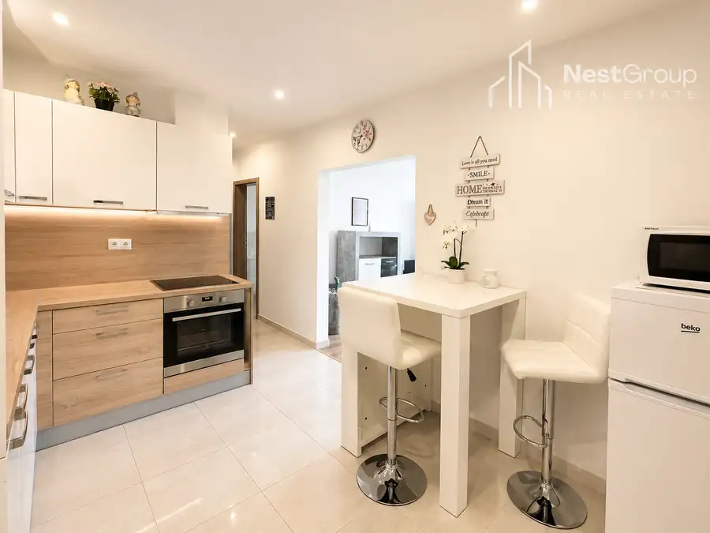
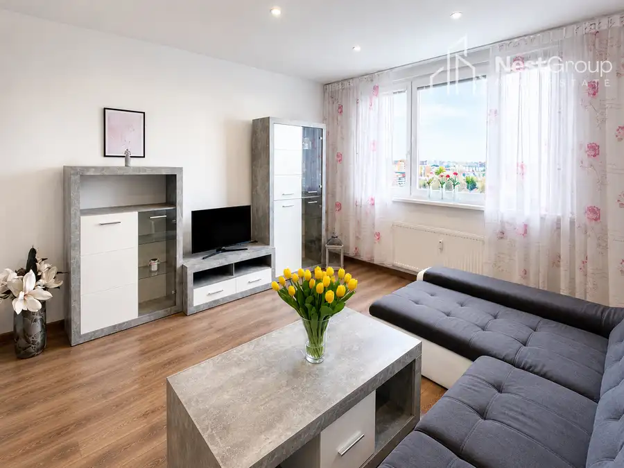
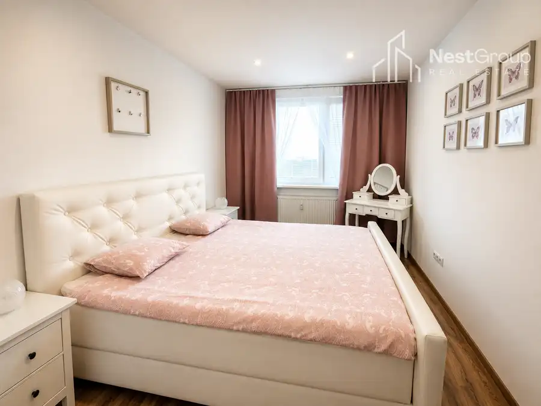
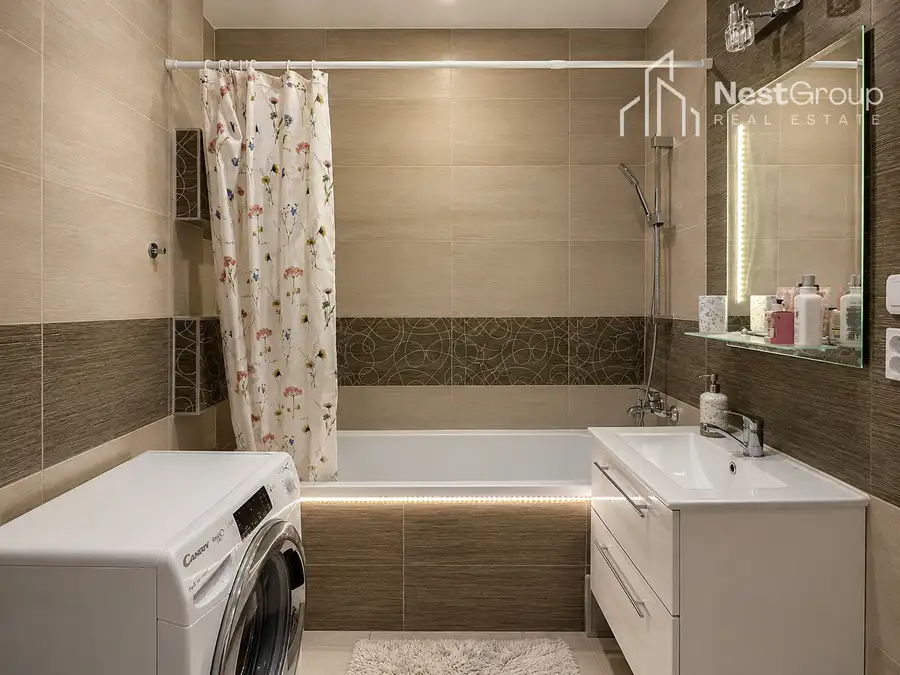
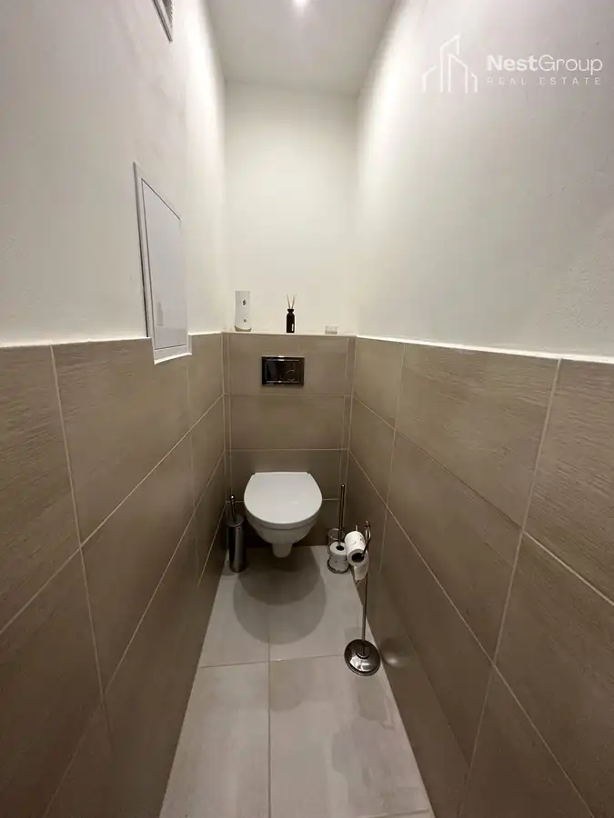

PREDAJ kompletne zariadený 2,5i byt na Hrobákovej ul., BA - Petržalka
Petržalka, Bratislava






- Dispozícia3-izbový
- Plocha54.83 m²
- StavKompletná rekonštrukcia
- VlastníctvoOsobné
O nehnuteľnosti
Realitná kancelária NestGroup ponúka EXKLUZÍVNE na PREDAJ veľmi pekne zariadený 2,5-izbový byt na Hrobákovej ulici v Bratislave – Petržalke.Investícia, ktorá zarába od prvého dňa! Byt sa predáva so spoľahlivými nájomníkmi - bez starostí, bez hľadania nového nájomcu, s okamžitým výnosom. Moderne zariadený interiér, praktická dispozícia, krásny výhľad z najvyššieho poschodia a výborná lokalita robia z tejto nehnuteľnosti ideálnu voľbu na bývanie aj investičný zámer.Byt sa nachádza na 12./12. poschodí zrekonštruovaného bytového domu s dvomi výťahmi, kamerovým systémom a udržiavanými spoločnými priestormi. Komfort bývania dopĺňa veľké parkovisko priamo pred bytovým domom.ZÁKLADNÉ INFORMÁCIEcelková výmera: 54,83 m²12./12. poschodiekompletne zariadený byt pripravený na okamžité nasťahovanieDISPOZÍCIAByt pozostáva zo vstupnej chodby, kompletne vybavenej kuchyne so spotrebičmi, priestrannej obývacej izby s veľkou sedacou súpravou a obývacou stenou, spálne zariadenej manželskou posteľou, nočnými stolíkmi a toaletným stolíkom, ďalšej miestnosti využívanej ako priestranný šatník, kúpeľne s vaňou a samostatného WC. Súčasťou vybavenia je aj práčka a sušička.VÝHODYkompletne zariadený byt bez nutnosti ďalších investíciípraktická 2,5-izbová dispozícia s veľkým šatníkomnajvyššie poschodie s dostatkom svetla a príjemným výhľadomzrekonštruovaný bytový dom s kamerovým systémomdva výťahyveľké parkovisko priamo pred bytovým domomvhodný na bývanie aj ako investícia na prenájomLOKALITAPetržalka patrí medzi najvyhľadávanejšie mestské časti Bratislavy vďaka kompletnej občianskej vybavenosti a výbornej dostupnosti do centra mesta.V pešej dostupnosti sa nachádzajú obchody, potraviny, pekáreň, základná škola, materská škola, zastávky MHD aj ďalšie služby, ktoré spríjemňujú každodenný život.Milovníci športu a aktívneho oddychu ocenia blízkosť Petržalskej hrádze, Dostihovej dráhy, športových ihrísk a množstva cyklistických či bežeckých trás.PARKOVANIEVeľké verejné parkovisko priamo pred bytovým domom.CENA260.000,- EUR vrátane provízie a kompletného právneho servisu.V prípade záujmu o viac informácií alebo obhliadku nás neváhajte kontaktovať:PaedDr. Eva Gajdošová📞 0907 816 704✉️ eva.gajdosova@nestgroup.sk
Parametre
- Cena vrátane energií
- Nie
- Druh
- 3 izbový byt
- Dátum zverejnenia
- 23. 07. 2026
- Stav nehnuteľnosti
- Kompletná rekonštrukcia
- Typ
- Predaj
- Vlastníctvo
- Osobné
- Vybavenie
- Výťah
- Úžitková plocha
- 54.83 m²
Kde to je


Mohlo by Vás zaujímať
 DomNové
Cena na vyžádáníZNÍŽENÁ CENA RD so záhradou a garážou, Gruzínska ulica-Prievoz, Bratislava
Ružinov, Bratislava
280.83 m²
DomNové
Cena na vyžádáníZNÍŽENÁ CENA RD so záhradou a garážou, Gruzínska ulica-Prievoz, Bratislava
Ružinov, Bratislava
280.83 m²
 DomNové
Cena na vyžádáníPREDAJ – luxusný investičný komplex pri kúpeľoch Piešťany
Piešťany
529 m²
DomNové
Cena na vyžádáníPREDAJ – luxusný investičný komplex pri kúpeľoch Piešťany
Piešťany
529 m²
 BytRezervované
170 000 €Štýlový 4-izbový mezonet, valčianska dolina
Valča
76.06 m²
BytRezervované
170 000 €Štýlový 4-izbový mezonet, valčianska dolina
Valča
76.06 m²